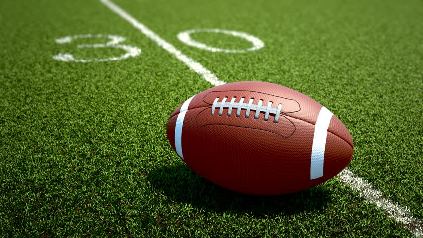
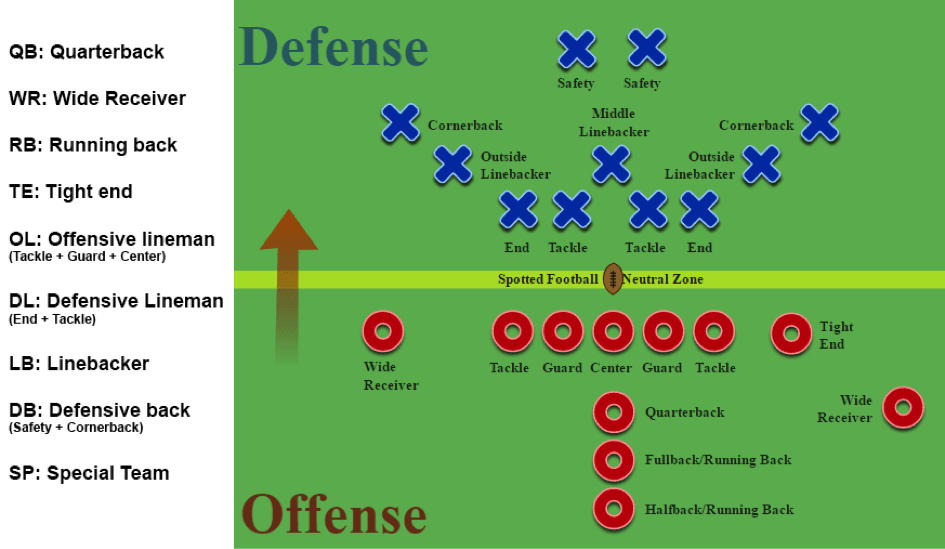
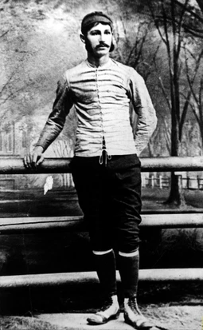

Amerikansk Fotboll
Amerikansk fotboll är ett positionsspel och går ut på att vinna mark och göra poäng genom att föra bollen framåt in i motståndarens end zone (målområde) för en touchdown eller genom att göra ett så kallat field goal (sparkmål). Laget som innehar bollen har fyra försök, downs, att förflytta sig minst tio yards. Om laget når tio yards eller mer så börjar de om på den platsen med fyra nya försök för att nå ytterligare minst tio yards och så vidare. Ett bra tips är att tidigt lokalisera kedjelaget, vilka är de som håller upp orangea pinnar eller stolpar (ca 2 m höga) som markerar var 10 yards börjar och hur långt laget ska nå. Dessutom finns en pinne som markerar var innevarande försök påbörjas och vilket av de 4 försöken som ska spelas (siffran överst på den pinnen).
Spelets gångr
Spelet består enbart av fasta situationer. Coachen för det lag som anfaller, offense, bestämmer ett av alla lagets intränade spelkombinationer för sitt lag som ska användes vid detta försöket. Quarterbacken mottar instruktionerna och förmedlar spelet till övriga lagkamrater i en samling, huddle. Liknande instruktionsförfarande gäller för defense. Därefter positionerar lagen ut sig på varsin sida av bollinjen. Anfallet startar spelet på överenskommen signal. Spelet i ett försök varar i genomsnitt i fyra sekunder och slutar genom touchdown, eller att bollbäraren blir tacklad, att bollen vid en framåtpassning fångas eller slår i marken eller att bollen hamnar utanför sidlinjen. Därefter har lagen 25 sekunder till förfogande för att sätta upp nya strategier och kalla nya spel, allt för att vinna eller försvara mark.
Varje lag har upp till 45 spelare till sitt förfogande varav elva alltid är på planen samtidigt (seniorer). Varje spelare har en specifik position och i varje laguppställning finns spelare som är anfallsspecialister respektive försvarsspecialister, även om alla spelare får spela både anfall och försvar. Man får byta hur många gånger och man vill. Varje lag har en spelbok med ett antal olika fördefinierade spel-kombinationer som används för att föra bollen framåt på planen eller att vara effektivt för att stoppa motståndaren som anfaller.
Poäng
Det lag som samlat mest poäng under matchen vinner. På dessa vis kan man samla poäng: Touchdown (6 poäng) – När en spelare för in bollen eller tar emot en passning i motståndarlagets målområde. Vid touchdown får det poänggörande laget också ett försök att göra extrapoäng genom att endera sparka alternativt försöka passa eller springa in bollen i målomårdet igen. Touchdowns kan även göras av det defensiva laget vid fumble recovery och vid interceptions. Extrapoäng (1 poäng) – När en spelare lyckas sparka in bollen i mål efter touchdown. Extrapoäng (2 poäng) – När en spelare lyckas springa in bollen eller ta emot en passning i målområdet direkt efter touchdown. Field goal (3 poäng) – När en spelare sparkar in bollen utifrån spelplanen mellan målstolparna och över tvärribban på målet utan föregående touchdown. Safety (2 poäng) – När en spelare lyckas tackla en bollbärande motståndare i dennes eget målområde.
Historia - Walter Camp
Det var först på 1880-talet som spelet blev mer kodifierat, och mannen krediterades för att hantera spelets utveckling mot sin moderna form är Walter Camp (1859–1925), ofta känd som ”far till amerikansk fotboll”. Lägret var en Yale grund- och medicinstudent mellan 1876–81, och såväl som att spela halvback och fungera som lagkapten, han blev en nyckelmedlem i det andra amerikanska Intercollegiate Football Association, som reformerades 1876 och i till 1892. Under Camps ledning fastställde IFA gemensamma regler inklusive systemet för ”nedgångar” (behovet av för att bollen ska flyttas nedåt ett visst avstånd inom ett tilldelat antal försök) och antalet spelare per sida (11).
